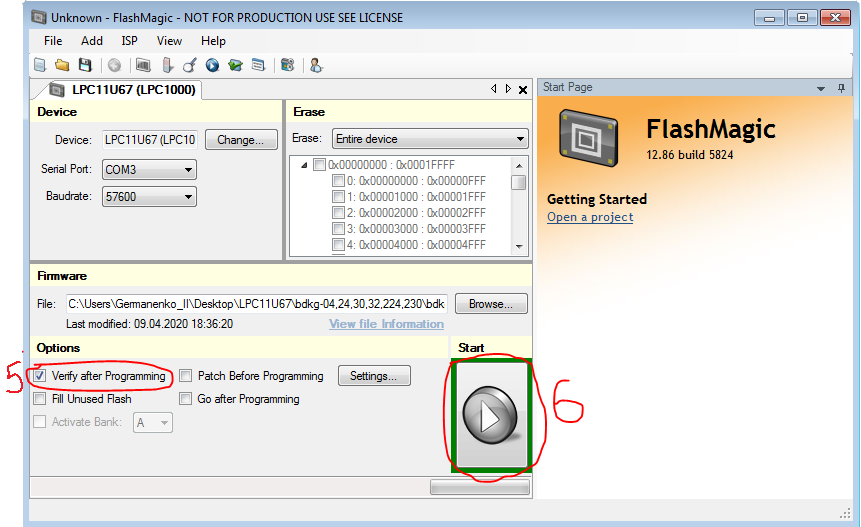

Инструкция
по прошивке процессоров LPC11U67
(БДКГ-04/24/30/32/35/224/230)
ВАЖНО! Проверить наличие контакта между стоком и истоком транзистора VT1 на плате с
процессором.
- Запускаем ПО “Flash Magic”.
- Выбираем нужный COM-порт (1) и устанавливаем скорость 57600 (2).
- Выбираем в графе «Device» (нажав кнопку «Change» (3)) нужный процессор (в случае с БДКГ-04 это процессор LPC11U67J, который находиться в LPC1000→UART→LPC11U67).
- Выбираем файл прошивки: нажимаем кнопку “Browse…” и по пути \\FILESERVER\Manufacture\Uchastok.RIR\programming\Programmator\LPC11U67\bdkg-04,24,30,32,224,230 выбираем нужный файл прошивки (в случае с БДКГ-04 это файл «bdkg-04_.hex»).
- Подключаем блок (к примеру БДГК-04) к ПК через адаптер USB-БД, ставим галочку в «Verify after Programming» (5) (для проверки записанной прошивки) и нажимаем кнопку «Start» (6). 
- Если никаких ошибок не выскочило (8) и не зависло на установлении скорости (7), то программирование прошло успешно. Переподключить БД.
- Перед его подключением к ПК требуется закоротить (пинцетом) точки 7 и 8 на плате устройства обработки (после подключения убрать пинцет) и повторить 1-6 заново.
- Включить ПО «Aterminal» для БДКГ-04/24/30/32/35/224/230. Выполнить пункт 8 и 9. Потом выбрать команду «Настройка: 05 00 07 FF 00», отправить, после получения ответа выбрать команду «Внутрисхемный загрузчик: 6C 00 F0», отправить. После получения ответа закрыть COM-порт и повторить пункты 1-6 заново.
- Запускаем ПО «ATerminal» для БДКГ-04/24/30/32/224/230.
- Выбираем нужный COM-порт (8) и выставляем скорость до 100000 (9).
- Выбрать любую команду, добавить её (10) и не менее 4-х раз отправить (11)
 После получения ответа, скорость (9) выставиться автоматически. Это означает, что контроллер
запрограммирован и БД можно отдавать в настройку.
После получения ответа, скорость (9) выставиться автоматически. Это означает, что контроллер
запрограммирован и БД можно отдавать в настройку.
Если вдруг понадобиться перепрограммировать БД, то есть два варианта:
После всех манипуляций, проверить работоспособность БД через ПО «Background
Calibration» или «DU
Calibration».
ВАЖНО! После завершения прошивки сбросить (перекоммутировать) питание.